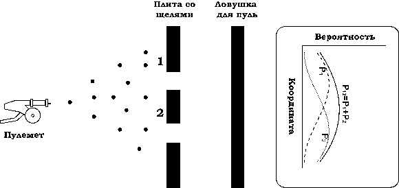
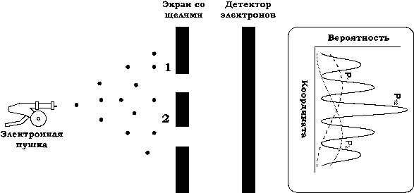
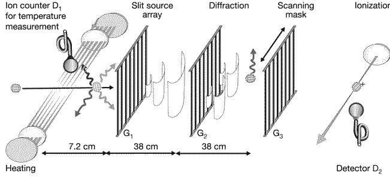

Основы квантовой механики на примере двухщелевого эксперимента
Сама попытка вообразить картину элементарных частиц и думать о них визуально — значит иметь абсолютно неверное представление о них.
В. Гейзинберг
В ближайших двух главах на примере конкретных экспериментов мы познакомимся с базовыми представлениями квантовой физики, сделаем их понятными и «рабочими». Затем обсудим необходимые нам теоретические концепции и применим их к тому, что чувствуем, видим, наблюдаем. А далее рассмотрим то, что обычно относят к мистике.
Согласно классической физике, исследуемый объект находится лишь в каком-то одном из множества возможных состояний. Он не может пребывать в нескольких состояниях одновременно, нельзя придать смысл сумме состояний. Если я нахожусь сейчас в комнате, я, стало быть, не в коридоре. Состояние, когда я нахожусь и в комнате, и в коридоре, невозможно. Я ведь не могу в одно и то же время находиться и там, и там! И не могу одномоментно выйти отсюда через дверь и выпрыгнуть в окно: я либо выхожу через дверь, либо выскакиваю в окно. Очевидно, такой подход полностью согласуется с житейским здравым смыслом.
В квантовой механике (КМ) такая ситуация является лишь одной из возможных. Состояния системы, когда реализуется только один из множества вариантов, в квантовой механике называют смешанными, или смесью. Смешанные состояния являются по сути классическими — система может быть с определенной вероятностью обнаружена в одном из состояний, но никак не в нескольких состояниях сразу.
Однако известно, что в природе имеет место и совершенно другая ситуация, когда объект находится в нескольких состояниях одновременно. Иными словами, происходит наложение двух или большего числа состояний друг на друга без какого-либо взаимного влияния. Например, экспериментально доказано, что один объект, который мы по привычке называем частицей, может одновременно проходить через две щели в непрозрачном экране. Частица, проходящая через первую щель, — это одно состояние, та же частица, проходящая через вторую, — другое. И эксперимент показывает, что наблюдается сумма этих состояний! В таком случае говорят о суперпозиции состояний, или о чисто-квантовом состоянии.
Речь идет о квантовой суперпозиции (когерентной суперпозиции), то есть о суперпозиции состояний, которые не могут быть реализованы одновременно с классической точки зрения. Суперпозиционные состояния могут существовать лишь при отсутствии взаимодействия рассматриваемой системы с окружением. Они описываются посредством так называемой волновой функции, которую также называют вектором состояния. Это описание формализуется заданием вектора в гильбертовом пространстве [9] , определяющим полный набор состояний, в которых может находиться замкнутая система.
[9] См. словарь основных терминов в конце книги. Напомню, что выделенные шрифтом места предназначены для читателя, предпочитающего достаточно строгие формулировки или желающего ознакомиться с математическим аппаратом КМ. Эти кусочки можно без боязни за общее понимание текста пропустить, особенно при первом чтении.
Волновая функция — это частный случай, одна из возможных форм представления вектора состояния как функции координат и времени. Это представление системы, максимально приближенное к привычному классическому описанию, предполагающему наличие общего и независимого ни от чего пространства – времени.
Наличие этих двух типов состояний — смеси и суперпозиции — является основой для понимания квантовой картины мира и ее связи с мистической. Другой важной для нас темой будут условия перехода суперпозиции состояний в смесь и наоборот. Эти и другие вопросы мы разберем на примере знаменитого двухщелевого эксперимента [10] .
[10] В описании двухщелевого эксперимента мы придерживаемся изложения Ричарда Фейнмана, см.: Фейнман Р . Фейнмановские лекции по физике. М.: Мир, 1977. Т. 3. Гл. 37–38.
Для начала возьмем пулемет и мысленно проведем эксперимент, показанный на рис. 1

Рис. 1
Он не очень хорош, наш пулемет. Он выпускает пули, направление полета которых заранее неизвестно. То ли направо они полетят, то ли налево…. Перед пулеметом стоит броневая плита, а в ней проделаны две щели, через которые пули свободно проходят. Далее стоит «детектор» — любая ловушка, в которой застревают все попавшие в нее пули. По окончании эксперимента можно пересчитать число пуль, застрявших в ловушке, на единицу ее длины и разделить это число на общее количество выпущенных пуль. Или на время стрельбы, если скорость стрельбы считать постоянной. Эту величину — число застрявших пуль на единицу длины ловушки в окрестности некоторой точки Х, отнесенное к полному числу пуль, мы будем называть вероятностью попадания пули в точку Х. Заметим, что мы можем говорить только о вероятности — нельзя сказать определенно, куда попадет очередная пуля. И даже попав в дыру, она может срикошетить от ее края и уйти вообще неизвестно куда.
Мысленно проведем три опыта: первый — когда открыта первая щель, а вторая закрыта; второй — когда открыта вторая щель, а первая закрыта. И, наконец, третий опыт — когда обе щели открыты.
Результат нашего первого «эксперимента» показан на том же рисунке, на графике. Ось вероятности в нем отложена вправо, а координата — это и есть положение точки X . Пунктирная линия показывает распределение вероятности P1 попавших в детектор пуль при открытой первой щели, кривая из точек — вероятность попадания в детектор пуль при открытой второй щели и сплошная линия — вероятность попадания в детектор пуль при обеих открытых щелях, которую мы обозначили как P12 . Сравнив величины P1, P2 и P12 , мы можем сделать вывод, что вероятности просто складываются,
P1 + P2 = P12
Итак, для пуль воздействие двух одновременно открытых щелей складывается из воздействия каждой щели в отдельности.
Представим себе такой же опыт с электронами, схема которого показана на рис. 2.

Рис. 2
Возьмем электронную пушку, наподобие тех, что когда-то стояли в каждом телевизоре, и поместим перед нею непрозрачный для электронов экран с двумя щелями. Прошедшие через щели электроны можно регистрировать различными методами: с помощью сцинтиллирующего экрана, попадание электрона на который вызывает вспышку света, фотопленки или с помощью счетчиков различных типов, например, счетчика Гейгера.
Результаты подсчетов в случае, когда одна из щелей закрыта, вполне предсказуемы и очень похожи на итоги пулеметной стрельбы (линии из точек и штрихов на рисунке). А вот в случае, когда обе щели открыты, мы получаем совершенно неожиданную кривую P12 , показанную сплошной линией. Она явно не совпадает с суммой P1 и P2 ! Получившуюся кривую называют интерференционной картиной от двух щелей.
Давайте попробуем разобраться, в чем тут дело. Если мы исходим из гипотезы, что электрон проходит либо через щель 1, либо через щель 2, то в случае двух открытых щелей мы должны получить сумму вкладов от одной и другой щели, как это имело место в опыте с пулеметной стрельбой. Вероятности независимых событий складываются, и в этом случае мы бы получили P1 + P2 = P12. Во избежание недоразумений отметим, что графики отражают вероятность попадания электрона в определенную точку детектора. Если пренебречь статистическими ошибками, эти графики не зависят от полного числа зарегистрированных частиц.
Может, мы не учли какой-нибудь существенный эффект, и суперпозиция состояний (то есть одновременное прохождение электрона через две щели) здесь совсем не при чем? Может быть, у нас очень мощный поток электронов, и разные электроны, проходя через разные щели, как-то искажают движение друг друга? Для проверки этой гипотезы надо модернизировать электронную пушку так, чтобы электроны вылетали из нее достаточно редко. Скажем, не чаще, чем раз в полчаса. За это время каждый электрон уж точно пролетит все расстояние от пушки до детектора и будет зарегистрирован. Так что никакого взаимного влияния летящих электронов друг на друга не будет!
Сказано — сделано. Мы модернизировали электронную пушку и полгода провели возле установки, проводя эксперимент и набирая необходимую статистику. Каков же результат? Он ничуть не изменился.
Но, может быть, электроны каким-то образом блуждают от отверстия к отверстию и только потом достигают детектора? Это объяснение также не подходит: на кривой P 12 при двух открытых щелях есть точки, в которые попадает значительно меньше электронов, чем при любой из открытых щелей. И наоборот, есть точки, вероятность попадания электронов в которые более чем вдвое превышает вероятность попадания электронов, прошедших через каждую щель по отдельности.
Стало быть, утверждение о том, что электроны проходят либо сквозь щель 1, либо сквозь щель 2, неверно. Они проходят через обе щели одновременно. И очень простой математический аппарат, описывающий такой процесс, дает абсолютно точное согласие с экспериментом, показанным сплошной линией на графике.
Если подойти к вопросу более строго, то утверждение, что электрон проходит одновременно через две щели, неверно. Понятие «электрон» можно соотнести только с локальным объектом (смешанным, «проявленным» состоянием), здесь же мы имеем дело с квантовой суперпозицией различных компонент волновой функции.
Чем же отличаются пули от электронов? С точки зрения квантовой механики — ничем. Только, как показывают расчеты, интерференционная картина от рассеяния пуль характеризуется столь узкими максимумами и минимумами, что никакой детектор их зарегистрировать не в состоянии. Расстояния между этими минимумами и максимумами неизмеримо меньше размеров самой пули. Так что детекторы будут давать усредненную картину, показанную сплошной кривой на рис. 1.
Давайте теперь внесем такие изменения в эксперимент, чтобы можно было «проследить» за электроном, то есть узнать, через какую щель он проходит. Поставим возле одной из щелей детектор, который регистрирует прохождение электрона сквозь нее (рис. 3).
Рис. 3
В этом случае, если пролетный детектор регистрирует прохождение электрона через щель 2, мы будем знать, что электрон прошел через эту щель, а если пролетный детектор не дает сигнала, а основной детектор дает сигнал, то ясно, что электрон прошел через щель 1. Можно поставить и два пролетных детектора — на каждую из щелей, но это никак не скажется на результатах нашего опыта. Конечно, любой детектор, так или иначе, исказит движение электрона, но будем считать это влияние не очень существенным. Для нас ведь куда более важен сам факт регистрации того, через какую из щелей проходит электрон!
Как вы думаете, какую картину мы увидим? Результат эксперимента показан на рис. 3, качественно он ничем не отличается от опыта с пулеметной стрельбой. Таким образом, мы выяснили, что, когда мы смотрим на электрон и фиксируем его состояние, то он проходит либо через одно отверстие, либо через другое. Суперпозиции этих состояний нет! А когда мы на него не смотрим, электрон одновременно проходит через две щели, и распределение частиц на экране совсем не такое, как тогда, когда мы на них смотрим! Выходит, наблюдение как бы «вырывает» объект из совокупности неопределенных квантовых состояний и переводит его в проявленное, наблюдаемое, классическое состояние.
Может быть, все это не так, и дело только в том, что пролетный детектор слишком сильно искажает движение электронов? Проведя дополнительные опыты с различными детекторами, по-разному искажающими движение электронов, мы заключаем, что роль этого эффекта не очень существенна. Существенным оказывается только сам факт фиксации состояния объекта!
Таким образом, если измерение, проведенное над классической системой, может и не оказать никакого влияния на ее состояние, для квантовой системы это не так: измерение разрушает чисто квантовое состояние, переводя суперпозицию в смесь.
Сделаем математическое резюме полученных результатов. В квантовой теории вектор состояния принято обозначать символом | >. Если какой-то набор данных, определяющих систему, обозначить буквой x, то вектор состояния будет иметь вид |x>.
В описанном эксперименте при открытой первой щели вектор состояния обозначается как |1>, при открытой второй щели — как |2>, при двух открытых щелях вектор состояния будет содержать две компоненты,
|x> = a|1> + b|2>, (1)
где a и b — комплексные числа, называемые амплитудами вероятности. Они удовлетворяют условию нормировки |a|2 + |b|2 = 1.
В случае, если поставлен пролетный детектор, квантовая система перестает быть замкнутой, поскольку с ней взаимодействует внешняя система — детектор. Происходит переход суперпозиции в смесь , и теперь вероятности прохождения электронов через каждую из щелей даются формулами P1 = |a|2, P2 = |b|2, P1 + P2 = 1. Интерференция отсутствует, мы имеем дело со смешанным состоянием.
Если же событие может произойти несколькими взаимоисключающими с классической точки зрения способами, то амплитуда вероятности события — это сумма амплитуд вероятности каждого отдельного канала, а вероятность события определяется формулой P = |(a|1> + b|2>)|2 . Возникает интерференция, то есть взаимное влияние на результирующую вероятность обеих компонент вектора состояния. В этом случае говорят, что мы имеем дело с суперпозицией состояний.
Отметим, что суперпозиция — это не смесь двух классических состояний (немного одного, немного другого), это нелокальное состояние, в котором электрона, как локального элемента классической реальности, нет. Лишь в ходе декогеренции [11] , вызванной взаимодействием с окружением (в нашем случае — экраном), электрон возникает в виде локального классического объекта.
[11] Декогеренция — это процесс перехода суперпозиции в смесь, из нелокализованного в пространстве квантового состояния в наблюдаемое.
Теперь — короткий экскурс в историю подобных опытов. Впервые интерференцию света на двух щелях наблюдал английский ученый Томас Юнг в начале XIX века. Затем, в 1926–1927 годах К. Д. Дэвиссоном и Л. X. Джермером в экспериментах с использованием монокристалла никеля была открыта дифракция электронов — явление, когда при прохождении электронами через множество «щелей», образованных плоскостями кристалла, наблюдаются периодические пики в их интенсивности. Природа этих пиков совершенно аналогична природе пиков в двухщелевом эксперименте, а их пространственное расположение и интенсивность позволяют получить точные данные о структуре кристалла. Этим ученым, а также Д. П. Томсону, который независимо от них также открыл дифракцию электронов, в 1937 году была присуждена Нобелевская премия.
Затем подобные опыты многократно повторялись, в том числе и с летящими «поштучно» электронами, а также с нейтронами и атомами, и во всех них наблюдалась предсказываемая квантовой механикой интерференционная картина. Впоследствии были проведены эксперименты с более крупными частицами. Один из таких опытов (с молекулами тетрафенилпорфирина) был проведен в 2003 году группой ученых из Венского университета во главе с Антоном Цайлингером [12] . В этом классическом двухщелевом эксперименте было четко продемонстрировано наличие интерференционной картины от одновременного прохождения очень большой по квантовым меркам молекулы через две щели.
[12] Hackermueller L., Uttenthaler S., Hornberger K., Reiger E., Brezger B., Zeilinger A. and Arndt M. Wave Nature of Biomolecules and Fluorofullerenes. Phys. Rev. Lett. 91, 090408 (2003).
Наиболее впечатляющий на сегодняшний день эксперимент был недавно проведен той же группой исследователей [13] . В этом исследовании пучок фуллеренов (молекул C 70 , содержащих 70 атомов углерода) рассеивался на дифракционной решетке, состоящей из большого числа узких щелей. При этом имелась возможность вести контролируемый нагрев летящих в пучке молекул C 70 посредством лазерного луча, что позволяло менять их внутреннюю температуру (иначе говоря, среднюю энергию колебаний атомов углерода внутри этих молекул).
[13] Hackermueller L., Hornberger K., Brezger B., Zeilinger A. and Arndt M. Decoherence of matter waves by thermal emission of radiation // Nature 427, 711 (2004).
Теперь вспомним, что любое нагретое тело, в том числе молекула фуллерена, испускает тепловые фотоны, спектр которых отражает среднюю энергию переходов между возможными состояниями системы. По нескольким таким фотонам можно, в принципе, с точностью до длины волны испускаемого кванта определить траекторию испустившей их молекулы. Отметим, что чем выше температура и, соответственно, меньше длина волны кванта, тем с большей точностью мы могли бы определить положение молекулы в пространстве, а при некоторой критической температуре точность окажется достаточна для определения, на какой конкретно щели произошло рассеяние.
Соответственно, если бы кто-то окружил установку Цайлингера совершенными детекторами фотонов, то он, в принципе, мог бы установить, на какой из щелей дифракционной решетки рассеялся фуллерен. Другими словами, испускание молекулой квантов света дало бы экспериментатору ту информацию для разделения компонент суперпозиции, которую нам давал пролетный детектор. Однако никаких детекторов вокруг установки не было. Как и предсказывала теория декогеренции [14] , их роль сыграла окружающая среда.
[14] Подробнее о теории декогеренции будет идти речь в главе 6.
В эксперименте было обнаружено, что в отсутствии лазерного нагрева наблюдается интерференционная картина, совершенно аналогичная картине от двух щелей в опыте с электронами. Включение лазерного нагрева приводит сначала к ослаблению интерференционного контраста, а затем, по мере роста мощности нагрева, к полному исчезновению эффектов интерференции. Было получено, что при температурах T < 1000K молекулы ведут себя как квантовые частицы, а при T > 3000K, когда траектории фуллеренов «фиксируются» окружающей средой с необходимой точностью — как классические тела.
Таким образом, роль детектора, способного выделять компоненты суперпозиции, оказалась способна выполнять окружающая среда. В ней при взаимодействии с тепловыми фотонами в той или иной форме и записывалась информация о траектории и состоянии молекулы фуллерена. Никакого специального устройства не надо! Совершенно не важно, через что идет обмен информацией: через специально поставленный детектор, окружающую среду или человека. Для разрушения когерентности состояний и исчезновения интерференционной картины имеет значение только принципиальное наличие информации, через какую из щелей прошла частица, а кто ее получит, не важно. Иначе говоря, фиксация или «проявление» суперпозиционных состояний вызывается обменом информацией между подсистемой (в данном случае — частицей фуллерена) и окружением.
Возможность контролируемого нагрева молекул позволила в данном эксперименте изучить переход от квантового к классическому режиму во всех промежуточных стадиях. Оказалось, что расчеты, выполненные в рамках теории декогеренции (о ней пойдет речь ниже), полностью согласуются с экспериментальными данными.
Иначе говоря, в эксперименте подтверждены выводы теории декогеренции о том, что в основе наблюдаемой реальности лежит нелокализованная и «невидимая» квантовая реальность, которая становится локализованной и «видимой» в ходе происходящего при взаимодействии обмена информацией и сопутствующей этому процессу фиксацией состояний.
На рис. 4 приведена схема установки Цайлингера, без всяких комментариев. Полюбуйтесь на нее, просто так.

Рис. 4
Следующая глава будет посвящена квантовым корреляциям .